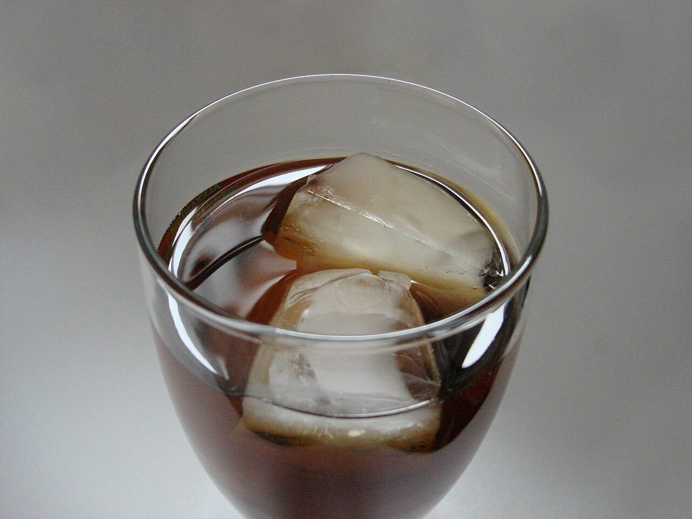
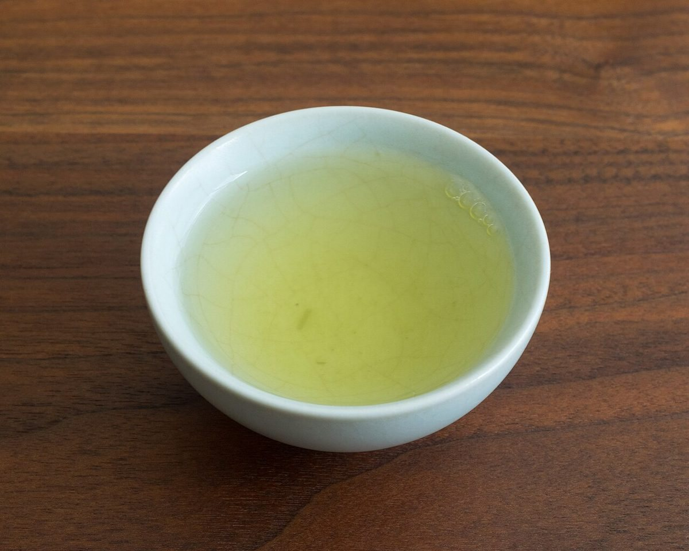
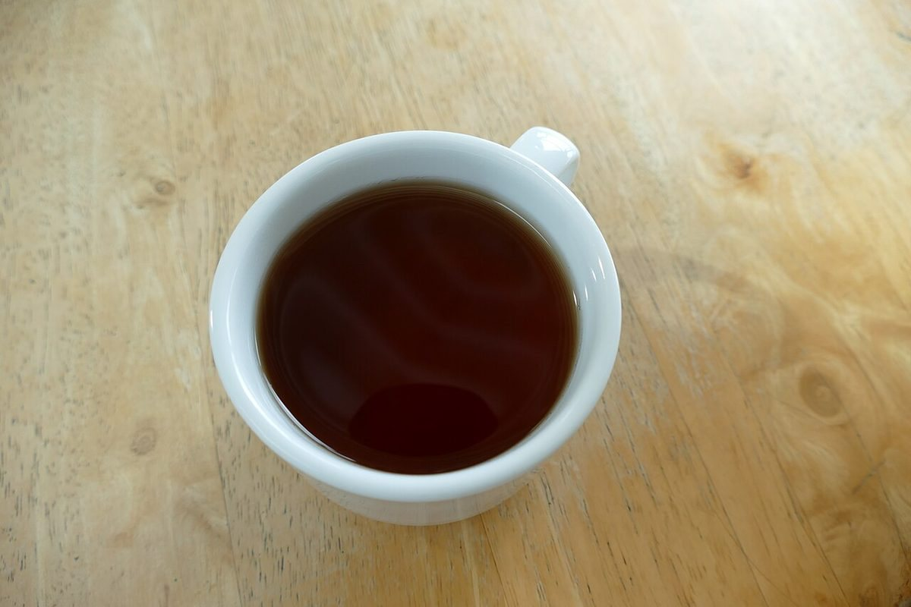

一度、ゆっくり立ち寄ってみたいなと思います。
口コミ
ここに掲載しているのは実際の声ではありません。
このページの3件は、サンプルとして制作側が作成した「イメージ例」です。実際のお客様の声ではありません。ご来店後のお声は、お店の許可を得て掲載する形を想定しています。
どんなお店なのか、ページで分かったらうれしいな。
営業時間や場所がすぐ分かるページだったら、友人にも教えたいと思います。



掲載写真はフリー素材のイメージです。店舗の実際の料理・店内・外観ではありません。他地域で撮影されたもの、撮影地が不明なものを含みます。
ここに掲載しているのは実際の声ではありません。
このページの3件は、サンプルとして制作側が作成した「イメージ例」です。実際のお客様の声ではありません。ご来店後のお声は、お店の許可を得て掲載する形を想定しています。
一度、ゆっくり立ち寄ってみたいなと思います。
どんなお店なのか、ページで分かったらうれしいな。
営業時間や場所がすぐ分かるページだったら、友人にも教えたいと思います。


